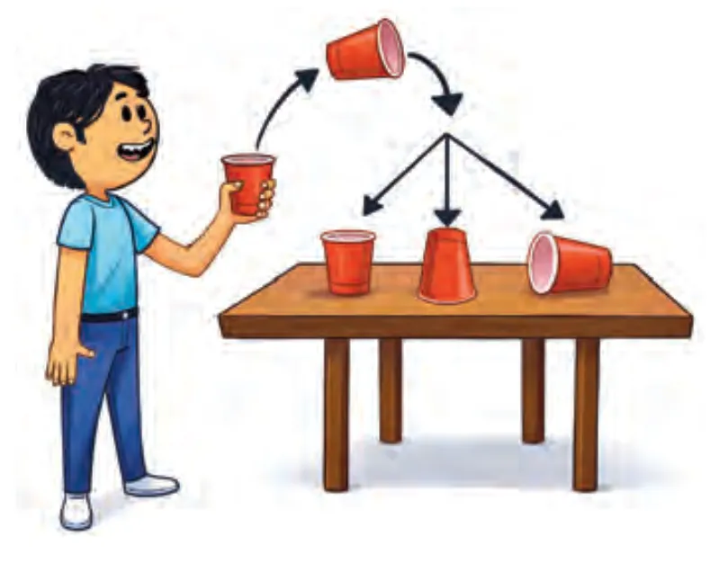
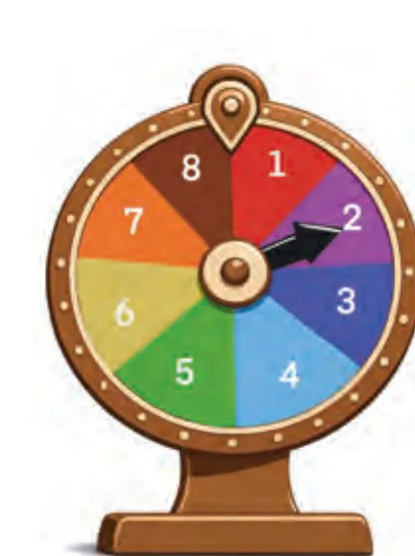
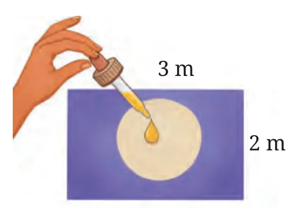

Rank the following events on a scale from 0 (Impossible) to 1 (Certain). Label each event: impossible, less likely, equally likely, more likely, certain. Give reasons. (i) The next Monday will come after Sunday. (ii) It will snow in Mumbai in July. (iii) An elephant will walk through your classroom today. (iv) You will greet at least one friend at school tomorrow.
Formula / idea0 = impossible, near 0 = less likely, ½ = equally likely, near 1 = more likely, 1 = certain
(i) Next Monday comes after Sunday
Step 1
The days of the week always come in the same order, so this always happens
AnswerCertain (1)
(ii) Snow in Mumbai in July
Step 1
Mumbai is hot and humid and July is the monsoon season; it has never snowed there
AnswerImpossible (0)
(iii) An elephant walks through your classroom today
Step 1
It is not strictly impossible, but it is extremely rare in a school
AnswerLess likely (almost 0)
(iv) You greet at least one friend at school tomorrow
Step 1
You meet friends almost every school day, unless you are absent or it is a holiday
AnswerMore likely (close to 1)
💡 Your reasons may differ a little. What matters is that you justify each label.
Exercise Set 7.2
6 questions
1
A sample of 30 sweets from a bag has 10 red, 8 green, 7 yellow and 5 blue. (i) What is the probability that a sweet picked at random is green? (ii) If the bag has 600 sweets, how many are likely to be yellow?
GivenSample = 30 sweets: red 10, green 8, yellow 7, blue 5; bag = 600 sweets
To find(i) P(green) (ii) expected yellow sweets in the bag
Formula / ideaExperimental probability = number of times the event happenstotal number of trials
In a sample of 40 students, 14 like the Science club, 11 Arts, 9 Sports and 6 Debate. The school has 800 students. (i) Find P(a student likes Arts). (ii) Estimate the number of Sports club fans in the school.
GivenSample 40: Science 14, Arts 11, Sports 9, Debate 6; school = 800
To find(i) P(Arts) (ii) Sports fans in the school
(i)
Step 1
P(Arts) = 1140 = 0.275
AnswerP(Arts) = 0.275
(ii)
Step 1
P(Sports) = 940
Step 2
Estimate = 940 × 800 = 9 × 20 = 180
AnswerAbout 180 students
3
Toss a coin 20 times and record the results. (i) How many heads? (ii) How many tails? (iii) What is the experimental probability of heads? (iv) What is the probability of tails on one more toss?
Step 1
This depends on your own tosses. Suppose you get 11 heads and 9 tails
Step 2
(i) Heads = 11 (ii) Tails = 9
Step 3
(iii) Experimental P(H) = 1120 = 0.55
Step 4
(iv) The coin has no memory, so for one more toss P(T) = 12 whatever happened before
AnswerSample: 11 H, 9 T; P(H) = 0.55; next toss P(T) = ½
💡 Use the Coin Lab on the notes page to toss on screen.
4
Toss a paper cup 100 times. Record whether it lands on its bottom, top or side. Assign experimental probabilities.

Fig. 7.5: the cup can land on its bottom, top or side
Step 1
Sample record: bottom 18, top 24, side 58 (total 100)
💡 The three outcomes are not equally likely, so these probabilities can only be found by experiment.
5
What is the probability of getting an even number on a fair 6-sided die?
GivenFair die: outcomes 1, 2, 3, 4, 5, 6
To findP(even)
Formula / ideaP(E) = number of favourable outcomestotal number of outcomes
Step 1
Favourable outcomes: 2, 4, 6, that is 3
Step 2
P(even) = 36 = 12
AnswerP(even) = ½
6
A die is rolled 12 times and shows ‘3’ three times. (i) What is the experimental probability of getting 3? (ii) What is the theoretical probability? (iii) Why are they different? What happens if you roll 60, 600 or 6000 times?
(i)
Step 1
Experimental P(3) = 312 = 14
Answer0.25
(ii)
Step 1
Theoretical P(3) = 16 (one face out of six)
Answer≈ 0.167
(iii)
Step 1
12 rolls is a very small number of trials, so chance plays a big part
Step 2
With 60, 600, 6000 rolls we expect about 10, 100, 1000 threes. The experimental probability comes closer and closer to 16
AnswerThe difference shrinks as trials increase (Law of Large Numbers)
Exercise Set 7.3
3 questions
1
When a single 6-sided die is rolled, what is the total number of possible outcomes in the sample space?
Step 1
S = {1, 2, 3, 4, 5, 6}
Answern(S) = 6
2
Write down the sample space S for: (i) rolling a die and tossing a coin together (ii) choosing a random integer between −5 and +5 (iii) one ball drawn from a box of 5 green and 7 red balls.
(i) Die and coin
Step 1
Each of the 6 numbers can go with H or T: 6 × 2 = 12 outcomes
In a village fair there are 3 snacks: Samosa, Pakora and Bhaji, and 2 drinks: Chai and Lassi. A person picks one snack and one drink. (i) Write the sample space. (ii) Write the event “Samosa is the snack”.
Step 1
Make a table: snacks in rows, drinks in columns. Number of outcomes = 3 × 2 = 6
Basket A has 1 apple and 2 oranges. Basket B has 1 banana and 1 mango. One fruit is picked from each basket. (i) Draw a tree diagram. (ii) Write the sample space. (iii) Find P(apple and banana).
Step 1
First branch (Basket A): Apple, Orange₁, Orange₂, each with probability 13
Step 2
Second branch (Basket B): from each, Banana or Mango, each 12
(ii)
AnswerS = {(A, B), (A, M), (O₁, B), (O₁, M), (O₂, B), (O₂, M)}: 6 equally likely outcomes
(iii)
Step 1
Only (A, B) is favourable: P = 16
Step 2
Along the path: 13 × 12 = 16 ✔
AnswerP(apple and banana) = 16
2
A box has 3 red, 4 black and 2 green pens. You pick one and put it back, then your friend picks one. (i) List the outcomes and draw a tree diagram. (ii) Find P(both pens are the same colour).
GivenR = 3, B = 4, G = 2, total 9; with replacement
(i)
Step 1
First pick: R (39), B (49), G (29). Since the pen is put back, the second pick has the same three branches
Fill in the blanks: (i) The probability of an impossible event is ___. (ii) The set of all possible outcomes is called the ___. (iii) The probability of a certain event is ___. (iv) The probability of getting heads on a fair coin is ___.
Answer(i) 0 (ii) sample space (iii) 1 (iv) ½ (0.5)
2
In a survey of 50 students, 15 liked football. The ___ (frequency / relative frequency) of liking football is ___.
Step 1
Frequency = number of times = 15
Step 2
Relative frequency = 1550 = 310 = 0.3
AnswerFrequency = 15; relative frequency = 0.3
3
Which of these have equally likely outcomes? (i) A car starts or does not start. (ii) Tossing a fair coin. (iii) Rolling a fair die. (iv) Drawing a marble from 3 red and 7 blue. (v) A baby is a boy or a girl.
Step 1
(i) A working car usually starts, so the outcomes are not equally likely → No
(v) Very nearly, but records show slightly more boys are born → Not exactly
AnswerEqually likely: (ii) and (iii)
4
Write the sample space and find the probability: (i) two coins, at least one head (ii) cards 1 to 10, an even number (iii) a die, a number greater than 4 (iv) 3 red, 2 blue, 1 green ball, not red (v) three coins, exactly two heads.
(i)
Step 1
S = {HH, HT, TH, TT}; E = {HH, HT, TH}
AnswerP = 34
(ii)
Step 1
S = {1, 2, …, 10}; E = {2, 4, 6, 8, 10}
AnswerP = 510 = 12
(iii)
Step 1
S = {1, 2, 3, 4, 5, 6}; E = {5, 6}
AnswerP = 26 = 13
(iv)
Step 1
S = {R1, R2, R3, B1, B2, G}; not red = {B1, B2, G}
AnswerP = 36 = 12
(v)
Step 1
S = {HHH, HHT, HTH, HTT, THH, THT, TTH, TTT}, 8 outcomes; E = {HHT, HTH, THH}
AnswerP = 38
5
A bag has 3 candies: strawberry, lemon and mint. What is P(strawberry)?
Step 1
S = {strawberry, lemon, mint}, all equally likely; favourable = 1
AnswerP(strawberry) = 13
6
You have 2 shirts (red, blue) and 3 pants (jeans, khakis, shorts). List all possible outfits in a table.
Step 1
Rows: Red shirt, Blue shirt. Columns: Jeans, Khakis, Shorts
Step 2
Red + Jeans, Red + Khakis, Red + Shorts, Blue + Jeans, Blue + Khakis, Blue + Shorts
Answer2 × 3 = 6 outfits
7
Tyre life data for 1000 cases: less than 4000 km: 20; 4001 to 9000 km: 210; 9001 to 14000 km: 325; more than 14000 km: 445. Find the probability that a tyre lasts (i) less than 4000 km (ii) between 4000 and 14000 km (iii) more than 14000 km.
Step 1
Total = 20 + 210 + 325 + 445 = 1000 ✔
(i)
Step 1
P = 201000
Answer0.02
(ii)
Step 1
P = 210 + 3251000 = 5351000
Answer0.535
(iii)
Step 1
P = 4451000
Answer0.445
💡 Check: 0.02 + 0.535 + 0.445 = 1 ✔
8
The letters of PEACE are written on cards. One card is picked. Find (i) P(it is P, E or C) (ii) P(it is not an E).
Step 1
5 cards: P, E, A, C, E
(i)
Step 1
Favourable: P, E, E, C = 4 cards
AnswerP = 45
(ii)
Step 1
Not E: P, A, C = 3 cards
AnswerP = 35
9*
An arrow is spun and stops on one of the numbers 1 to 8, all equally likely. Find the probability that it points at (i) 8 (ii) an odd number (iii) a number more than 2 (iv) a number less than 9 (v) a multiple of 3.

Fig. 7.7: the spinner
Givenn(S) = 8
Step 1
(i) {8}: 18
Step 2
(ii) {1, 3, 5, 7}: 48 = 12
Step 3
(iii) {3, 4, 5, 6, 7, 8}: 68 = 34
Step 4
(iv) all 8 numbers: 88 = 1 (certain)
Step 5
(v) {3, 6}: 28 = 14
Answer(i) ⅛ (ii) ½ (iii) ¾ (iv) 1 (v) ¼
10*
A bag has 4 red and 5 blue balls. One ball is drawn and laid aside, then a second ball is drawn. Draw a tree diagram and find (i) P(red then blue) (ii) P(both blue).
Given4 R, 5 B, total 9; without replacement
Step 1
First draw: R 49, B 59. Only 8 balls remain for the second draw
A pair of dice is thrown. Write an event with probability 0 and one with probability 1.
Step 1
The smallest sum is 1 + 1 = 2 and the largest is 6 + 6 = 12
AnswerP = 0: “the sum is 13”; P = 1: “the sum is between 2 and 12”
12*
Find: (i) two dice, the sum is a prime greater than 5 (ii) 4 red, 3 green, 2 blue balls; two drawn without replacement, different colours (iii) three coins, the first is heads and exactly two heads (iv) a 4-digit number made from 1, 2, 3, 4 without repeats is even (v) 3 MCQs with 4 options each, guessing, exactly 2 correct.
(i)
Step 1
n(S) = 6 × 6 = 36. Primes > 5 possible as a sum: 7 and 11
Step 2
Sum 7: (1,6), (2,5), (3,4), (4,3), (5,2), (6,1) = 6 ways. Sum 11: (5,6), (6,5) = 2 ways
AnswerP = 836 = 29
(ii)
Step 1
Ways to choose 2 of 9 balls = 9 × 82 = 36
Step 2
Same colour: red 4 × 32 = 6, green 3 × 22 = 3, blue 1; total 10
Step 3
Different colours = 36 − 10 = 26
AnswerP = 2636 = 1318
(iii)
Step 1
n(S) = 8. First coin H and exactly two heads: {HHT, HTH}
AnswerP = 28 = 14
(iv)
Step 1
Total numbers = 4 × 3 × 2 × 1 = 24
Step 2
Even: last digit 2 or 4 (2 choices), other 3 digits in 3 × 2 × 1 = 6 ways: 12 numbers
AnswerP = 1224 = 12
(v)
Step 1
n(S) = 4 × 4 × 4 = 64
Step 2
Choose which 2 questions are right: 3 ways. Right answers 1 way each, the wrong one 3 ways: 3 × 1 × 1 × 3 = 9
AnswerP = 964 ≈ 0.14
13*
Balls numbered 1 to 4 are in a bag. Draw a tree for (i) draw, replace, draw again (ii) draw, do not replace, draw again. (iii) Compare the sizes of the two sample spaces.
Three coins are tossed and the number of heads is recorded. Which is the sample space: (i) {1, 2, 3} (ii) {0, 1, 2} (iii) {0, 1, 2, 3, 4} (iv) {0, 1, 2, 3}?
Step 1
Heads can be 0 (TTT), 1, 2 or 3 (HHH)
Step 2
(i) misses 0, (ii) misses 3, (iii) has 4, which is impossible with 3 coins
Answer(iv) {0, 1, 2, 3}
16*
A drop of dye falls at random on a 3 m × 2 m rectangle with a circle of diameter 1 m inside. What is the probability that it lands inside the circle?

Fig. 7.8
Formula / ideaP = favourable areatotal area
Step 1
Rectangle area = 3 × 2 = 6 m²
Step 2
Circle: r = 0.5 m, area = π × 0.5² = π4 ≈ 0.785 m²
Step 3
P = π4 ÷ 6 = π24
AnswerP = π24 ≈ 0.131
Made by MT Classes, S.K. Nagar, Motihari for Class 9 CBSE students. Questions are from the NCERT Ganita Manjari textbook; solutions are written by MT Classes. Back to the chapter notes · All notes